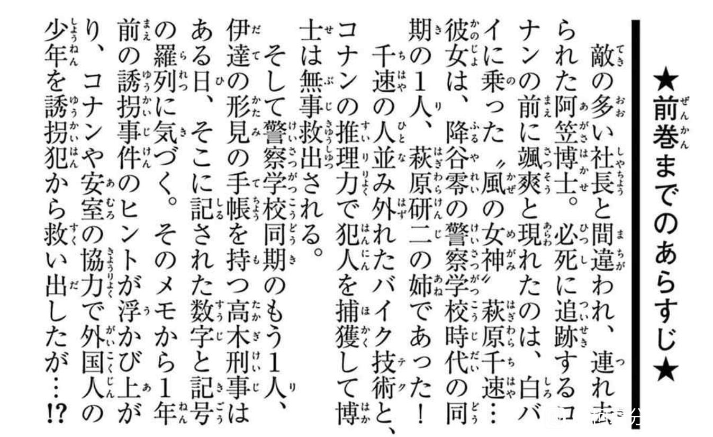

今天看吧里有人发帖提到了漫画的前情提要中对小兰称呼究竟是女朋友还是青梅竹马，我之前一直以为是翻译问题，因为受剧场版影响比较深，以为就是青梅竹马的同级生小兰。但刚刚翻了一下日版的漫画，发现并不是这样的，而是出现了一个非常有意思的现象。即对小兰的称呼从GF（girl friend）变为了幼馴染。以下将结合日文漫画分阶段详细介绍一下。
首先是第一阶段:漫画2-17卷，即灰原哀登场前的漫画前情提要
对于兰的介绍都是GF，如果翻译过来也就是女朋友。
然而这一固定的描述随着18卷灰原哀的登场发生了改变，及首次出现兰的前面没有添加GF，只是说住在了开侦探事务所的毛利兰家里。
随后是一段描述比较混乱的时期，在18卷-54卷的漫画前情提要中，有时候毛利兰的前面出现GF，有的时候则没有，而结束这一混乱时期的则是54卷。54卷末尾和55卷初发生的事件是侦探甲子园。55卷发生的事件是柯南和少年侦探团回忆和兰小时候的冒险，黑羽盗一出现并说：“你只不过是看了小说开头的概要而已，就不打算读完整本书的了吗”
而54卷也就是最后一次在前情提要中，用GF来形容小兰。55卷至今应该是再也没有过。
2024-01-16 21:06 | 贴吧用户_G2945DA:这莫非就是嘴替2024-01-22 22:41 | 贴吧用户_0795E8E:对头，这个就是寻找玛丽亚的前身版本。
随后55-68卷漫画的前情提要变成了一个简单化处理，及只提工藤新一，不提毛利兰，自然也就没有称谓问题。
而68卷发生的是白鸟和小林老师的恋情，即白鸟错把樱花和雪花弄混了，重新找回了真正的天命之女，小林老师。随后是少年侦探团大战怪盗基德，柯南对哀：白色的。
69卷发生的故事就是名场面（柯对哀：只看到了屁股而已，小孩子的裸体没关系）
69卷发生的故事就是名场面（柯对哀：只看到了屁股而已，小孩子的裸体没关系）
随后69-89卷对兰的称谓被固定为了幼なじみ
而89卷的结尾正是著名的宁茶伦出处，工藤新一空白的结婚申请表
2024-01-16 21:09 | 贴吧用户_0yVME5Z:那个“约会”是之前也用过的吗2024-01-16 21:33 | lg578011042:回复 贴吧用户_0yVME5Z :我大体翻了一下，应该是没有，之前提到毛利兰的时候基本都是提的住在gf毛利兰家里。69卷应该是第一次解释了变小的过程2024-01-17 22:45 | 贴吧用户_GbW789J:值得一提的是这里的柯南穿的是柯哀情侣装的一件

啊？啊？？这梗概也能挖啊😯
2024-01-16 20:09 | Flurry🔯:故事梗概也是作者写的，所以确实能挖2024-01-16 21:04 | 贴吧用户_0yVME5Z:按理来说，梗概这玩意从头到尾可以不改，只一点点增加新内容即可
而由于我手里的日文版漫画只到了98卷，90-98卷，就只有单纯介绍之前的剧情了，连对柯南的介绍都没了。
2024-01-16 20:59 | 山田储金:99-104卷也是差不多，都是前卷剧情梗概，没提到变小住进毛利家这种基础设定了2024-01-18 11:32 | 妮是額滴神啊🌱:所以這兩卷有什麼大事嗎？2024-01-18 11:55 | lg578011042:回复 妮是額滴神啊🌱 :看我后面刚总结出来的，只是一个猜测。90卷领妹的话2024-01-18 12:06 | 妮是額滴神啊🌱:回复 lg578011042 :嗯嗯 翻到後面看到了！
cy
这个事印证了我的推理，就是早期兰的确就是女主，73让哀出场晚就故意的，他清楚把灰原哀放出来女主就变了
2024-01-16 21:13 | 福尔摩斯的推理:早期的两人出场几乎就是照搬魔术快斗，青山当时也是在完成任务，构思肯定不完善。估计是准备构思灰原的时候才大致决定了毛利兰的形象。我是支持认为这个形象有原型的。2024-01-16 22:15 | ktysnin1999:回复 福尔摩斯的推理 :毛利兰是有现实原型的，灰原哀是作者自己，请参考高山青山类比柯哀关系的理论
厉害👍
强

很有力度的一些证明
收藏了 另外lz的头像也很不错，分析总结不错，头像更不错
另外lz的头像也很不错，分析总结不错，头像更不错
另外lz的头像也很不错，分析总结不错，头像更不错2024-01-17 12:01 | 皟宋簚刍蹌换:我放在43楼了2024-01-17 20:04 | 贴吧用户_G2945DA:回复 皟宋簚刍蹌换 :

有意思的讨论角度吧友真的细
吧友真的细cy
6
好，感觉这个分析很靠谱
连载版每章的人物简介从GF升级到彼女但还没到安室对国家的恋人级别
2024-01-16 22:06 | Aranea👻:至于这个简介更大的可能就是杂志部的人写的了毕竟一条能用几年
这两天在回顾漫画，发现在小哀登场前，涉及感情描写的只有三对，即新兰、工藤夫妇和毛利夫妇。硬要说，最多再加一对柯步。
除上述讲到的cp外，平和和高木佐藤这两对早期出现的cp，也都是在小哀登场后才开始描写的。
和叶是在小哀登场后的第一次服部出场案件里登场的，同时这篇里首次讲到了平和附身符和沼渊己一郎。
佐藤刑警是在柯哀首次球场约会篇里出场的。
感觉柯南以18卷为分水岭，之前的主要以案件为主的单元剧描写。涉及新兰的感情描写只是案件中的悬念或者小爆点。因此兰是女友就女友吧，不重要。
小哀出场后，青山开始推主线和恋爱推理剧情，单元案件变成了次要的内容。兰就从女友变成了更为准确的幼驯染的定位。
除上述讲到的cp外，平和和高木佐藤这两对早期出现的cp，也都是在小哀登场后才开始描写的。
和叶是在小哀登场后的第一次服部出场案件里登场的，同时这篇里首次讲到了平和附身符和沼渊己一郎。
佐藤刑警是在柯哀首次球场约会篇里出场的。
感觉柯南以18卷为分水岭，之前的主要以案件为主的单元剧描写。涉及新兰的感情描写只是案件中的悬念或者小爆点。因此兰是女友就女友吧，不重要。
小哀出场后，青山开始推主线和恋爱推理剧情，单元案件变成了次要的内容。兰就从女友变成了更为准确的幼驯染的定位。
2024-01-17 05:33 | 君尧云舟-:很靠谱，梗概也是他亲手写的
太细了
真是每天都能发现新东西啊
列文虎克 我看漫画压根就不看梗概
我看漫画压根就不看梗概LZNB能求一张头像原图嘛
能求一张头像原图嘛2024-01-17 04:50 | lg578011042:这个我也是之前从吧内找的。。。原图我也找不见了2024-01-17 12:01 | 皟宋簚刍蹌换:43楼我放了
我说怎么怪怪的
99-104卷，均为前情提要部分

2024-02-02 04:54 | 贴吧用户_78Ay7tK:你这是百度还是什么吖
我倒觉得是一开始写女朋友是因为一开始的设定就是短篇。计划加入灰原这个角色迟迟得不到肯定使得整个柯南的感情线处于比较混沌的状态。而且我记得在七朵玫瑰之后，柯南里的副cp才开始有了告白的情节。结合这些信息看来，结局是柯哀的可能性又大了一些。因为这意味着在哀登场后的大量细节是有意为之的。
人均列文虎克啊
不是，彼女也可以翻译成她，前50卷讨论过，出现“彼女”翻译成她比较合理。
2024-01-17 06:01 | 雪团子oO:不是，日文原文写的不是彼女，是GF，且用片假名标明是girlfriend，所以翻译成女朋友没有问题2024-01-17 08:14 | 三三喝菠萝水☔:回复 雪团子oO :日本用gf是一种调侃轻快的说法，但是用彼女就比较认真了。2024-01-17 11:17 | 把哈哈:回复 雪团子oO :虽然都是女朋友吧，但是girlfriend好像不算正儿八经谈恋爱？M3里面园子就调侃灰原是柯南的新しいガールフレンド2024-01-17 11:29 | 雪团子oO:回复 把哈哈 :我指的是女朋友翻译的没错，至于是不是真的算，都可以分析
有点意思收了
收了👌
好细…
难他天？！
😯这真的是大发现，这么多变化绝对不是巧合，不然编辑部直接复制粘贴就行了
lz的头像
2024-01-17 19:16 | NCC74656Voyage:谢谢！
cy

最后再补一个为什么从90卷开始漫画的前情提要不再对柯南的身份进行介绍了？难道经过了2-89卷历经20多年的介绍终于觉得大众已经知道了工藤新一就是江户川柯南这一设定不用再介绍吗？
在90卷的灵魂侦探案件中，玛丽说出了这样的话，我们如果只站在玛丽的角度看这句话，貌似是青山一贯的水剧情方式，红方情报不共享。但如果我们把这句话当作55卷黑羽盗一的那句话一样，同时也是对观众说的呢？“江户川柯南还是那个工藤新一吗？”这一问题问出的这一卷以后，漫画的前情提要中，再也没有持续了88卷的江户川柯南=工藤新一的描述了。是不是有点巧合的过分了？
在90卷的灵魂侦探案件中，玛丽说出了这样的话，我们如果只站在玛丽的角度看这句话，貌似是青山一贯的水剧情方式，红方情报不共享。但如果我们把这句话当作55卷黑羽盗一的那句话一样，同时也是对观众说的呢？“江户川柯南还是那个工藤新一吗？”这一问题问出的这一卷以后，漫画的前情提要中，再也没有持续了88卷的江户川柯南=工藤新一的描述了。是不是有点巧合的过分了？
2024-01-21 10:36 | InflancyAJ:现在是工藤新一plus版2024-01-21 10:38 | InflancyAJ:而且玛丽这句话也感觉没头没尾的。10年前新是小孩子，再怎么样人都是会成长的，成熟和改变都是必然的，所以感觉玛丽这句话很刻意。2024-01-21 10:38 | InflancyAJ:而且玛丽这句话也感觉没头没尾的。10年前新是小孩子，再怎么样人都是会成长的，成熟和改变都是必然的，所以感觉玛丽这句话很刻意。2024-02-01 01:03 | 贴吧用户_G3MKtCU:回复 InflancyAJ :就是暗示柯南已经不是之前那个愣头青了，现在的柯南已经开始成熟了，也就是说在灰原登场前新一还是以前那个样子，喜欢臭屁，莽撞，不了解世界的阴暗，只是认为侦探是个游戏，灰原登场接触了黑组，再也不是那个把侦探当作游戏的那个福尔摩斯迷了
 这个发现不得了啊
这个发现不得了啊18卷开始的那个有无GF的改变很有意思。按理说要复制粘贴就应该一溜复制粘贴下去。
19卷又改回去了，很妙，很微妙。
图为18卷19卷前情提要对比。
19卷又改回去了，很妙，很微妙。
图为18卷19卷前情提要对比。
有意思
细节
中翻不一直是青梅竹马毛利兰嘛
这个确实有注意过，一开始还很奇怪怎么直接称为女朋友
跟字数有没有关系？